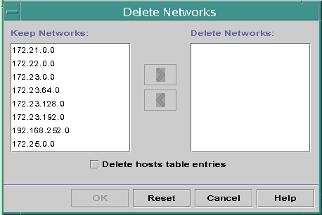

Previous
Previous
 How to Modify the Configuration of a DHCP
Network (dhtadm)
How to Modify the Configuration of a DHCP
Network (dhtadm)
Become superuser or assume a role or user name that is assigned to the DHCP Management profile.
For more information about the DHCP Management profile, see Setting Up User Access to DHCP Commands.
Roles contain authorizations and privileged commands. For more information about roles, see "Configuring RBAC (Task Map)" in System Administration Guide: Security Services.
Determine which macro includes information for all clients of the network.
The network macro's name matches the network IP address.
If you don't know which macro includes this information, you can display the dhcptab table to list all macros by using the command dhtadm -P.
Type a command of the following format to change the value of the option you want to change:
# dhtadm -M -m macro-name -e 'symbol=value' -g
See the dhtadm(1M) man page for more information about dhtadm command-line options.
Example 15-2 Using the dhtadm Command to Modify a DHCP Macro
For example, to change the 10.25.62.0 macro's lease time to 57600 seconds and the NIS domain to sem.example.com, you would type the following commands:
# dhtadm -M -m 10.25.62.0 -e 'LeaseTim=57600' -g
# dhtadm -M -m 10.25.62.0 -e 'NISdmain=sem.example.com' -g
The -g option causes the DHCP daemon to reread the dhcptab table and put the changes into effect.
Removing DHCP Networks
DHCP Manager enables you to remove multiple networks at once. You have the option to automatically remove the hosts table entries associated with the DHCP-managed IP addresses on those networks as well. The following figure shows DHCP Manager's Delete Networks dialog box.
Figure 15-7 Delete Networks Dialog Box in DHCP Manager
The pntadm command requires you to delete each IP address entry from a network before you delete that network. You can delete only one network at a time.
How to Remove a DHCP Network (DHCP Manager)
In DHCP Manager, select the Addresses tab.
See How to Start and Stop DHCP Manager for information about DHCP Manager.
Choose Delete Networks from the Edit menu.
The Delete Networks dialog box opens.
In the Keep Networks list, select the networks that you want to delete.
Press the Control key while you click with the mouse to select multiple networks. Press the Shift key while you click to select a range of networks.
Click the right arrow button to move the selected networks to the Delete Networks list.
If you want to remove the host table entries for this network's DHCP addresses, select Delete Host Table Entries.
Note that deleting host table entries does not delete the host registrations at the DNS server for these addresses. Entries are deleted only in the local name service.
Click OK.
How to Remove a DHCP Network (pntadm)
Note that this procedure deletes the network's IP addresses from the DHCP network table before removing the network. The addresses are deleted to ensure that the host names are removed from the hosts file or database.
Become superuser or assume a role or user name that is assigned to the DHCP Management profile.
For more information about the DHCP Management profile, see Setting Up User Access to DHCP Commands.
Roles contain authorizations and privileged commands. For more information about roles, see "Configuring RBAC (Task Map)" in System Administration Guide: Security Services.
Type a command following this format to remove an IP address and its host name from the name service:
# pntadm -D -y IP-address
For example, to remove IP address 10.25.52.1, you would type the following command:
# pntadm -D -y 10.25.52.1
The -y option specifies to delete the host name.
Repeat the pntadm -D -y command for each address in the network.
You might want to create a script to run the pntadm command if you are deleting many addresses.
After all addresses are deleted, type the following command to delete the network from the DHCP service.
# pntadm -R network-IP-address
For example, to remove network 10.25.52.0, you would type the following command:
# pntadm -R 10.25.52.0
See the pntadm(1M) man page for more information about using the pntadm utility.
Supporting BOOTP Clients With the DHCP Service (Task Map)
To support BOOTP clients on your DHCP server, you must set up your DHCP server to be BOOTP compatible. If you want to specify which BOOTP clients can use your DHCP, you can register BOOTP clients in the DHCP server's network table. Alternatively, you can reserve a number of IP addresses for automatic allocation to BOOTP clients.
Note - BOOTP addresses are permanently assigned, whether or not you explicitly assign a permanent lease to the address.
The following task map lists tasks that you might need to perform to support BOOTP clients. The task map contains links to the procedures used to carry out the tasks.
Task | Description | For Instructions |
|---|---|---|
Set up automatic BOOTP support. | Provides IP address for any BOOTP client on a DHCP-managed network, or on a network connected by a relay agent to a DHCP-managed network. You must reserve a pool of addresses for exclusive use by BOOTP clients. This option might be more useful if the server must support a large number of BOOTP clients. | |
Set up manual BOOTP support. | Provides IP address for only those BOOTP clients that have been manually registered with the DHCP service. This option requires you to bind a client's ID to a particular IP address that has been marked for BOOTP clients. This option is useful for a small number of BOOTP clients, or when you want to restrict the BOOTP clients that can use the DHCP server. | How to Set Up Support of Registered BOOTP Clients (DHCP Manager) |
How to Set Up Support of Any BOOTP Client
(DHCP Manager)
In DHCP Manager, select Modify from the Service menu.
The Modify Service Options dialog box opens.
See How to Start and Stop DHCP Manager for information about DHCP Manager.
In the BOOTP Compatibility section of the dialog box, select Automatic.
Select Restart Server, and click OK.
Select the Addresses tab.
Select addresses that you want to reserve for BOOTP clients.
Select a range of addresses by clicking the first address, pressing the Shift key, and clicking the last address. Select multiple nonconcurrent addresses by pressing the Control key while clicking each address.
Select Properties from the Edit menu.
The Modify Multiple Addresses dialog box opens.
In the BOOTP section, select Assign All Addresses Only to BOOTP Clients.
All other options should be set to Keep Current Settings.
Click OK.
Any BOOTP client can now obtain an address from this DHCP server.